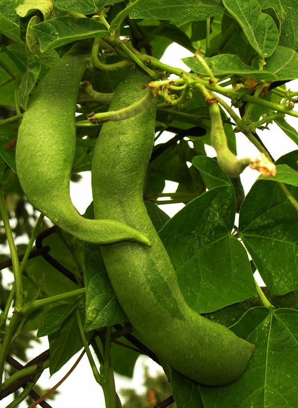
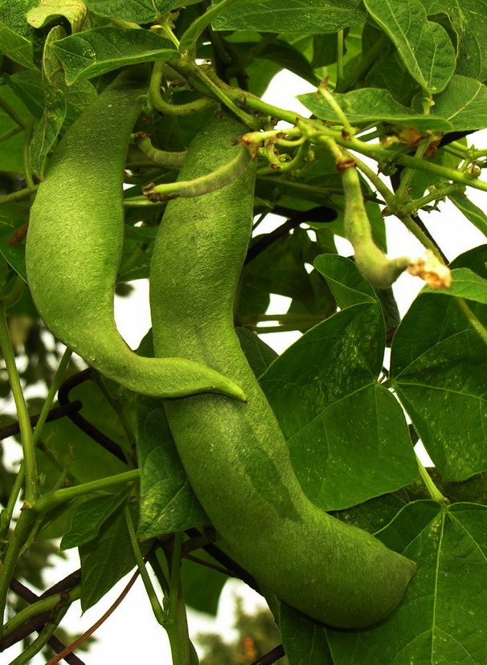

Mįslės Apie Vaisius | Misles.lt
2020.10.29 08:40

Misles.lt
mįslės su atsakymais, galvosūkiai, sudoku
Komentarai El. paštas RSSKategorijos
Galvosūkiai (297) Detektyviniai galvosūkiai (20) Galvosūkiai su degtukais (36) Galvosūkiai su monetomis (8) Loginiai galvosūkiai (173) Matematiniai galvosūkiai (60) Kvizai (1) Minklės (79) Mįslės apie augalus (95) Mįslės apie daiktus (268) Mįslės apie gamtą (83) Mįslės apie gyvūnus (70) Mįslės apie žmogų (68) Mįslės mažiems vaikams (27) Optinės apgaulės (13) Užduotys vaikams (12) Žemaitiškos mįslės (21)Žaidimai
Kryžiukai ir nuliukai Mįslės ir galvosūkiai River IQ SudokuGairės
Apversti paveiksliukai Detektyviniai uždaviniai Detektyvinės mįslės Detektyvinės užduotys Galvosūkiai su atsakymais Galvosūkiai suaugusiems Galvosūkiai vaikams Juokingos mįslės Linksmos mįslės Loginiai uždaviniai Loginės užduotys Logotipų kvizas atsakymai Matematiniai uždaviniai Matematinės užduotys Minklės su atsakymais Minklės su įminimais Minklės vaikams Mįslės apie bites Mįslės apie daržoves Mįslės apie duoną Mįslės apie grybus Mįslės apie Kalėdas Mįslės apie knygas Mįslės apie medžius Mįslės apie paukščius Mįslės apie pavasarį Mįslės apie rudenį Mįslės apie saulę Mįslės apie vaisius Mįslės apie vandenį Mįslės apie vasarą Mįslės apie Velykas Mįslės apie žiemą Mįslės su atsakymais Mįslės su įminimais Mįslės vaikams Optinės iliuzijos Pažinimo užduotys Rebusai Rebusai su atsakymais Rebusai vaikams Uždaviniai su degtukais Uždaviniai su monetomis Užduotys su degtukais Užduotys su monetomisŽalia višta, mėlyni kiaušiniai?
[Atsakymas ]
( +8 )Loading... | Gairės: Mįslės apie vaisius , Mįslės su atsakymais , Mįslės su įminimais , Mįslės vaikams | Kategorija: Mįslės apie augalus | Peržiūrėta: 21,240 |
Žalia kaip žolė, maža kaip pelė, saldi kaip medaus taurė?
[Atsakymas ]
( +8 )Loading... | Gairės: Mįslės apie vaisius , Mįslės su atsakymais , Mįslės su įminimais , Mįslės vaikams | Kategorija: Mįslės apie augalus | Peržiūrėta: 21,103 |
Sėdi nykštukas barzdotas, joja ponas bagotas. Netingėjo ponas nusėsti ir nykštuką suėsti?
[Atsakymas ]
( +5 )Loading... | Gairės: Mįslės apie vaisius , Mįslės su atsakymais , Mįslės su įminimais , Mįslės vaikams | Kategorija: Mįslės apie augalus | Peržiūrėta: 12,012 |
Saldus – ne medus, pakabintas nevarva?
[Atsakymas ]
( +9 )Loading... | Gairės: Mįslės apie vaisius , Mįslės su atsakymais , Mįslės su įminimais , Mįslės vaikams | Kategorija: Mįslės apie augalus | Peržiūrėta: 19,276 |
Raudonas puodelis, baltas kamštelis?
[Atsakymas ]
( +2 )Loading... | Gairės: Mįslės apie vaisius , Mįslės su atsakymais , Mįslės su įminimais , Mįslės vaikams | Kategorija: Mįslės apie augalus | Peržiūrėta: 17,389 |
Puiki panelė kiekvieną kreipia iš kelio?
[Atsakymas ]
( -4 )Loading... | Gairės: Mįslės apie vaisius , Mįslės su atsakymais , Mįslės su įminimais , Mįslės vaikams | Kategorija: Mįslės apie augalus | Peržiūrėta: 32,147 |
Pats kaip kibiras, o prie virvelės prikabintas?
[Atsakymas ]
( +2 )Loading... | Gairės: Mįslės apie vaisius , Mįslės su atsakymais , Mįslės su įminimais , Mįslės vaikams | Kategorija: Mįslės apie augalus | Peržiūrėta: 12,141 |
Medžio viršuje meduolis kabo?
[Atsakymas ]
( +4 )Loading... | Gairės: Mįslės apie medžius , Mįslės apie vaisius , Mįslės su atsakymais , Mįslės su įminimais , Mįslės vaikams | Kategorija: Mįslės apie augalus | Peržiūrėta: 15,271 |
Daug gražių raudonų mergelių linguonėje linguoja?
[Atsakymas ]
( +4 )Loading... | Gairės: Mįslės apie vaisius , Mįslės su atsakymais , Mįslės su įminimais , Mįslės vaikams | Kategorija: Mįslės apie augalus | Peržiūrėta: 11,530 |
Balta kaip sniegas, žalia kaip dobilas, raudona kaip kraujas?
[Atsakymas ]
( 0 )Loading... | Gairės: Mįslės apie vaisius , Mįslės su atsakymais , Mįslės su įminimais , Mįslės vaikams | Kategorija: Mįslės apie augalus | Peržiūrėta: 13,666 |
Puslapis 1 iš 2 1 2 »
Daugiausiai peržiūrėta
Du ratai pagiry stovi. Kas? - peržiūrėta 663,084 Tupėjo penkios varnos ant medžio. Atėjo medžiotojas, dvi nušovė. Kiek liko varnų? - peržiūrėta 118,629 A ir B atsisėdo palubėj. A nupuolė, B prapuolė, kas dar liko palubėj? - peržiūrėta 83,870 Gyvas – lavonas, numiręs – raudonas? - peržiūrėta 81,360 Be durų, be langų pilna troba svečių? - peržiūrėta 81,340 Ne vėjas, ne šiluma, o greitai išdžiovina? - peržiūrėta 75,865 Akys kaip ratai, o saulės nemato? - peržiūrėta 74,281 Kas yr raudons, ilgs i po žemi gyven? - peržiūrėta 73,757 173. Loginiai galvosūkiai - peržiūrėta 68,799 Pas kleboną vidury, pas bobutę yra dvi? - peržiūrėta 58,937Geriausiai įvertinta
Tupėjo penkios varnos ant medžio. Atėjo medžiotojas, dvi nušovė. Kiek liko varnų? (+117) Nors ką tik gimęs… (+99) A ir B atsisėdo palubėj. A nupuolė, B prapuolė, kas dar liko palubėj? (+96) Ne vėjas, ne šiluma, o greitai išdžiovina? (+65) Pas kleboną vidury, pas bobutę yra dvi? (+58)Naujausi komentarai
jonas on Kas vaikšto aukštyn kojom? karolis on 19. Detektyviniai galvosūkiai dziedas on 43. Matematiniai galvosūkiai Aurelija on 172. Loginiai galvosūkiai Edbaradas on Keturios seselės į vieną kasą taupo?Draugai
Eilėraščiai Literatūra Mitologija Patarlės Tarptautinių žodžių žodynas © 2020 Misles.lt - mįslės su atsakymais, mįslės vaikams, minklės su atsakymais, galvosūkiai, sudoku online.
Powered by WordPress & Atahualpa
- SEGEBUTĖS UŽRAŠAI: Pitaja arba "Drakono vaisius"
- Sodo gėrybės - Sujunk 3 vaisius
- vaisius - Vikižodynas - Wiktionary
- Daržovės ir vaisiai - BARBORA
- Džiovinti vaisiai | Džiovintos uogos | Riešutai Jums
- Drakono vaisius arba Kertuotis – Tailando vaisius ...
- Egzotiniai vaisiai ir daržovės | MAXIMA | MAXIMA
- Durianas – Tailando vaisių karalius, smirdantis vaisius ...
- VAISIAUS ŽŪTIS
- vaisiai - išsamiai DELFI.lt
- SEGEBUTĖS UŽRAŠAI: Pitaja arba "Drakono vaisius"
„Misija – švari vasara“ skaičiuoja darbo vaisius . www.alkas.lt 2020 09 24 11:04 „Misija – švari vasara“ skaičiuoja rezultatus | lrv.lt nuotr. Vasaros pradžioje Valstybinė saugomų teritorijų tarnyba prisijungė prie pakuočių tvarkymo sumanymo „Misija – švari vasara“. Kadangi buvo pastebėta, jog paskelbus karantiną ...
- Sodo gėrybės - Sujunk 3 vaisius
Paspaudus vaisius turi būti labai minkštas, o žievė itin lengvai luptis. Jei sukate galvą, ką pagaminti iš avokado. Štai jums kelios idėjos. Vištienos salotos su mangais ir avokadais. Itin ...
- vaisius - Vikižodynas - Wiktionary
Geriausia apsaugoti džiovintus vaisius nuo tiesioginių saulės spindulių ir laikyti juos tamsioje vietoje. Jei šaldytuve nėra pakankamai vietos džiovintiems vaisiams laikyti, galite juos įdėti į viršutinę virtuvės stalčių lentyną, kur dažnai nežiūrite. Atkreipkite dėmesį, kad kambaryje neturėtų būti didelė drėgmė.
- Daržovės ir vaisiai - BARBORA
Durianas – Tailando vaisius, tajų kalba vadinamas Tu-Rian.Tai didžiulis vaisius, pasižymintis specifiniu kvapu, todėl tikrai pastebėsite ir užuosite durianus pardavinėjamus ne tik Bankoko gatvėse ar turguose, bet ir praktiškai visur Tailande.
- Džiovinti vaisiai | Džiovintos uogos | Riešutai Jums
Saldžiarūgščius vaisius saugojo piktos ir nuodingos širšės. Žiemos pradžia Lapkritis - rugsėjo anūkas, o spalio - sūnus. Jis dar ne žiema. Tai paskutinis rudens mėnuo. Piktų šalnų ir žvarbumo pradžia. Nematoma šalčio giltinė nuvirina pievas, laukus, paežeres. Nupurto spalio auksą beržynuose, užgesina raudonų klevų ...
- Drakono vaisius arba Kertuotis – Tailando vaisius ...
Deja, visas bergamotės gėris yra odelėje, pats vaisius yra rūgštus ir maistui nenaudojamas. Nedideli bergamočių medeliai dyglių auga Italijoje, Bergamo regione, žydi balandį smulkiais baltais ir salsvai kvepiančiais žiedais. Vaisiai panašūs į citrinas ir sveria apie 200 g. Jos prinoksta ir skinamos žiemą bei ankstyvą pavasarį ...
- Egzotiniai vaisiai ir daržovės | MAXIMA | MAXIMA
Kertuotis, geriau žinomas kaip drakono vaisius, tajų kalba vadinamas Gao Mung Gorn, yra vienas iš Tailando vaisių, kurių tiesiog būtina paragauti keliaujant į Tailandą. Drakono vaisius yra iš tikrųjų išskirtinai atrodantis vaisius ir savo pavadinimą yra gavęs būtent dėl išskirtinės išvaizdos.
- Durianas – Tailando vaisių karalius, smirdantis vaisius ...
Blenderyje sumaltas drakono vaisius tapo gličia tyre, kuri nepasižymėjo skoniu, bet suputojo ir priminė šampūną su juodais krisleliais. Teko tą tyrę stipriai skiesti ananasų ir apelsinų sultimis, kol skonis tapo patrauklus ir nesijautė glitumo, tačiau ir pitajos skonio visai nesijautė. Nepatariu pitajos naudoti gėrimams.
- VAISIAUS ŽŪTIS
Maisto ir kitų kasdienių prekių parduotuvė internete. Informuojame, kad šioje svetainėje yra naudojami slapukai (angl. cookies).
- vaisiai - išsamiai DELFI.lt
Džiovinti vaisiai ir uogos ne tik sveikas ir maistingas užkandis praalkus, bet ir puikus įvairių maisto patiekalų pagardas, kurį įsigysite už puikią kainą! Įsigykite jau pamėgtų džiovintų vaisių ir uogų bei atraskite naujus skonius.
„Misija – švari vasara“ skaičiuoja darbo vaisius . www.alkas.lt 2020 09 24 11:04 „Misija – švari vasara“ skaičiuoja rezultatus | lrv.lt nuotr. Vasaros pradžioje Valstybinė saugomų teritorijų tarnyba prisijungė prie pakuočių tvarkymo sumanymo „Misija – švari vasara“. Kadangi buvo pastebėta, jog paskelbus karantiną ...
Paspaudus vaisius turi būti labai minkštas, o žievė itin lengvai luptis. Jei sukate galvą, ką pagaminti iš avokado. Štai jums kelios idėjos. Vištienos salotos su mangais ir avokadais. Itin ...
Geriausia apsaugoti džiovintus vaisius nuo tiesioginių saulės spindulių ir laikyti juos tamsioje vietoje. Jei šaldytuve nėra pakankamai vietos džiovintiems vaisiams laikyti, galite juos įdėti į viršutinę virtuvės stalčių lentyną, kur dažnai nežiūrite. Atkreipkite dėmesį, kad kambaryje neturėtų būti didelė drėgmė.
Durianas – Tailando vaisius, tajų kalba vadinamas Tu-Rian.Tai didžiulis vaisius, pasižymintis specifiniu kvapu, todėl tikrai pastebėsite ir užuosite durianus pardavinėjamus ne tik Bankoko gatvėse ar turguose, bet ir praktiškai visur Tailande.
Saldžiarūgščius vaisius saugojo piktos ir nuodingos širšės. Žiemos pradžia Lapkritis - rugsėjo anūkas, o spalio - sūnus. Jis dar ne žiema. Tai paskutinis rudens mėnuo. Piktų šalnų ir žvarbumo pradžia. Nematoma šalčio giltinė nuvirina pievas, laukus, paežeres. Nupurto spalio auksą beržynuose, užgesina raudonų klevų ...
Deja, visas bergamotės gėris yra odelėje, pats vaisius yra rūgštus ir maistui nenaudojamas. Nedideli bergamočių medeliai dyglių auga Italijoje, Bergamo regione, žydi balandį smulkiais baltais ir salsvai kvepiančiais žiedais. Vaisiai panašūs į citrinas ir sveria apie 200 g. Jos prinoksta ir skinamos žiemą bei ankstyvą pavasarį ...
Kertuotis, geriau žinomas kaip drakono vaisius, tajų kalba vadinamas Gao Mung Gorn, yra vienas iš Tailando vaisių, kurių tiesiog būtina paragauti keliaujant į Tailandą. Drakono vaisius yra iš tikrųjų išskirtinai atrodantis vaisius ir savo pavadinimą yra gavęs būtent dėl išskirtinės išvaizdos.
Blenderyje sumaltas drakono vaisius tapo gličia tyre, kuri nepasižymėjo skoniu, bet suputojo ir priminė šampūną su juodais krisleliais. Teko tą tyrę stipriai skiesti ananasų ir apelsinų sultimis, kol skonis tapo patrauklus ir nesijautė glitumo, tačiau ir pitajos skonio visai nesijautė. Nepatariu pitajos naudoti gėrimams.
Maisto ir kitų kasdienių prekių parduotuvė internete. Informuojame, kad šioje svetainėje yra naudojami slapukai (angl. cookies).
Džiovinti vaisiai ir uogos ne tik sveikas ir maistingas užkandis praalkus, bet ir puikus įvairių maisto patiekalų pagardas, kurį įsigysite už puikią kainą! Įsigykite jau pamėgtų džiovintų vaisių ir uogų bei atraskite naujus skonius.

 
